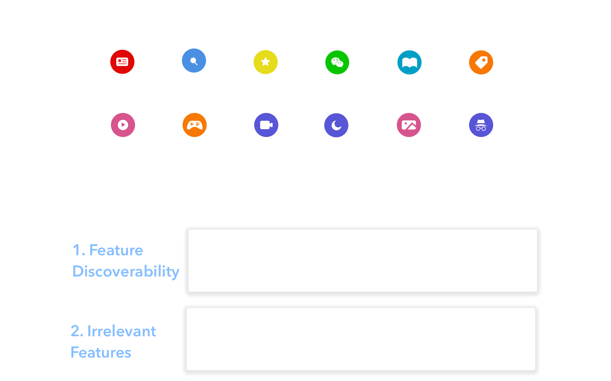
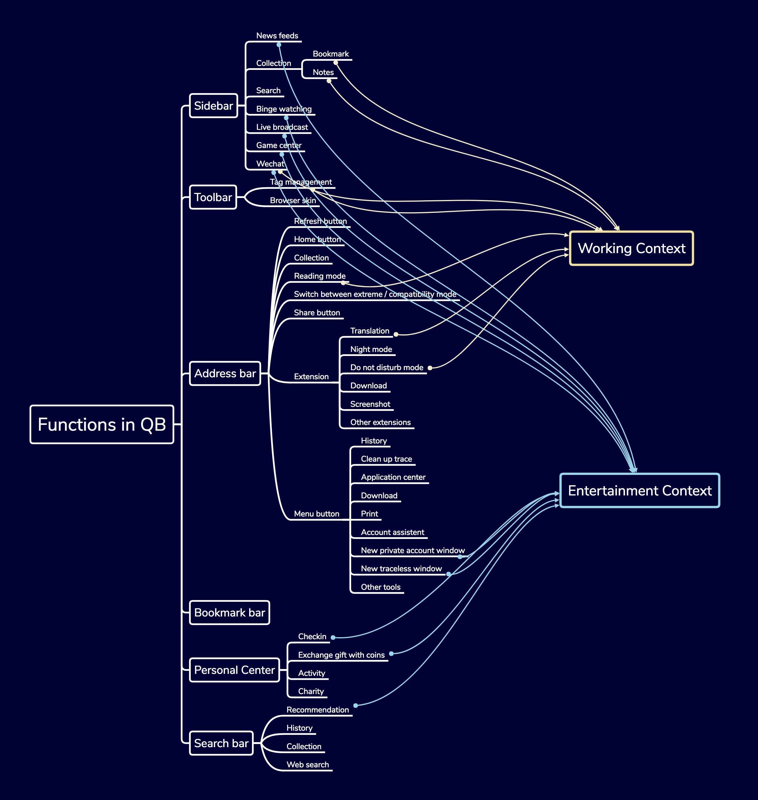
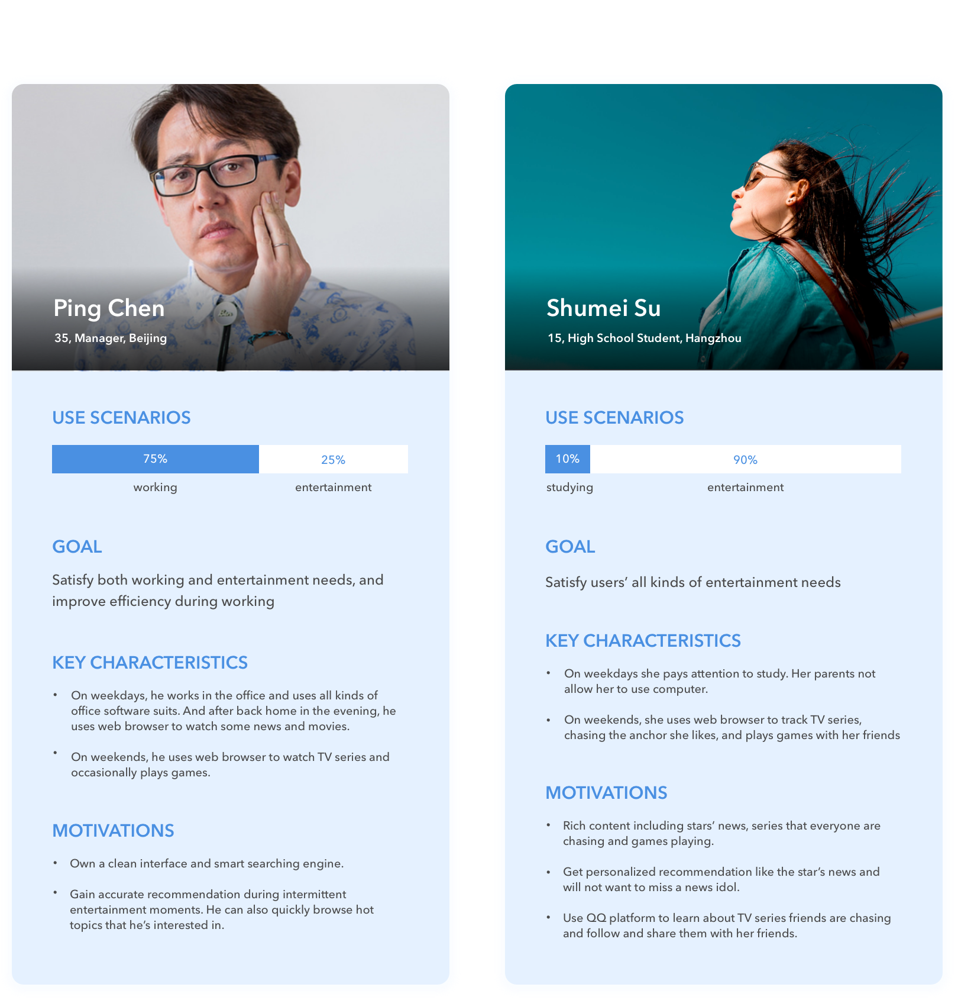
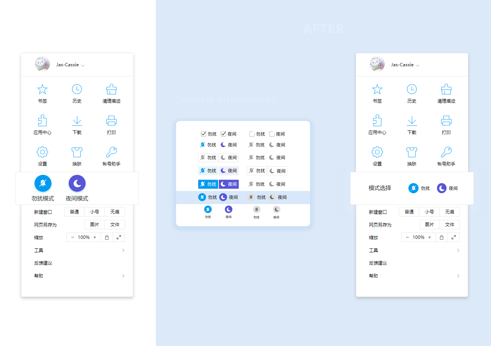
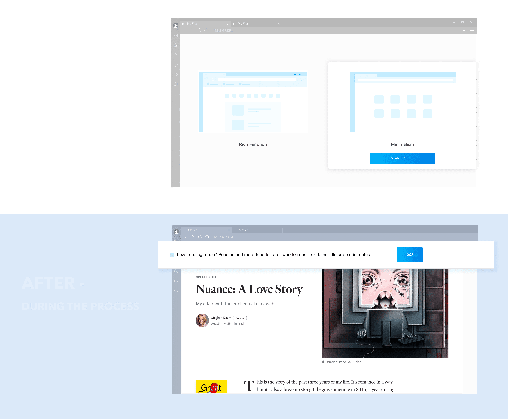
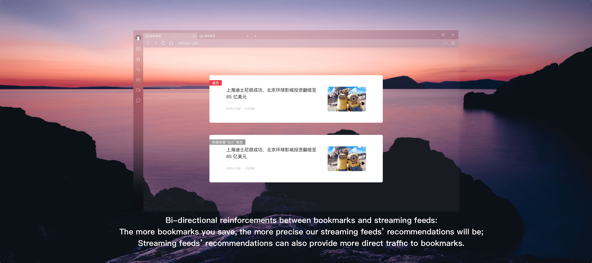

OVERVIEW
| ROLE | UX Designer. Visual Designer. |
| DURATION | Summer 2018 @ Tencent Internship |
| TAG | Feature Personalization. Do Not Disturb Mode. |
| TOOL | Sketch. Principle. SAP Scenes. Xmind. |
Last summer, I interned at Tencent as a UX Designer and was part of the QQ Browser team (QB). QB has 350 million MAU, the largest among Chinese web browsers. I was the individual designer on the project, but I was co-mentored by the design lead and a senior UX designer.
Background
QB (QQ Web Browser) has diverse user contexts like watching movies, playing games, reading e-books, studying... To tailor for those, QB keeps rolling out new features like video center or reading modes. So there are so many cool features. But the problem is that users don't know that!
One common solution is that a lot of features will provide notifications to attract users' attention, like notifying users when the newest episode comes. A lot of users complain it's such annoying!
So our goal is to reduce the distraction of too many notifications and find other ways to increase the discoverability of features.
Process

Solution 1: Feature Personalization
A lot of products already provide personalizing news, feeds, or activities, but how about personalizing features? So I initiated an idea of personalizing all features in the web browser based on the user’s profile and contexts of use:

Solution 2: Do Not Disturb Mode

UNDERSTANDING
Survey
The research team spent three months conducting 2 NPS surveys. QB active users' survey aimed to understand users' satisfaction of all features. And to compare users' satisfaction with competitive products, another survey also conducted for QQ marketing users.
BBS FEEDBACK
To collect feedback for the major finding 1 in a short time, I went to the online QB BBS to collect users' comments regarding notifications for Jun 2018.
CONTEXTUAL INQUIRY
For the finding 2, a UX researcher and I conducted 10 contextual inquiries to understand their use cases and pain points during their end-to-end process.
FEATURE HIERARCHY
Based on the problem space - various features are for different contexts, I mapped all features to their suitable contexts. So how to determine what contexts to map? Whether more coarse-grained like working, entertainment or fine-grained like reading books, watching movies? To make it simple at this stage, I chose the biggest two contexts and categorized features to working and entertainment contexts.
PERSONAS
Now it's time to define user groups under two contexts. But before I start, I conducted a quick data log analysis to make sure personas represents QB's target users. Data log analysis also helps us to determine our major user context - working:

DESIGN PROCESS
DESIGN ITERATIONS
The whole design process includes four design iterations. For each design iteration, I got feedback from other designers, and then talked to design lead about potential refinement and the next step’s design. After the 3rd round of iteration, I had a meeting with design lead and product manager lead, that’s when we brought up with tons of ideas together and determined the final iteration of design.

ITERATION 1 - DUAL MODE
One click to switch between working mode and entertainment mode.
Feedback
- 'Dual mode' is not so intuitive enough to associate with working and entertainment.
- Entertainment may not need a separate mode: Users don't care so much about efficiency during entertainment.
ITERATION 2 - OFFICE MODE
Instead of having dual mode, I focused on working contexts and put up with office mode. Then I went deeper to come up with several refinements especially tailored for efficient and seamless working experience.
Feedback
- Integrate functions to one mode may not always be the best choice. Especially when we also provide new functions within it.
- The difference between working and normal mode is that ‘do not disturb’, ‘users can choose style at the beginning’. Can we directly separate it to two modes?
ITERATION 3 - DO NOT DISTURB MODE & MINIMALISM MODE
I separated 'office mode' to 'do not disturb mode' and 'minimalism mode' and also refined each modes. For do not disturb mode, contexts including working, playing games, and sharing screens with others. And for minimalism mode, the target was to provide simple and clear UI.

Feedback
For the feedback session, I talked to product manager lead and also design lead. This session is very useful, we brought up with 3 main challenges for the current design and also the following core new idea together:
- The concept of minimalism mode is to provide a bundle of functions for people who prefer simple UI. But can we extend the user group to all users and incorporate more flexibility in customization?
ITERATION 4 - DO NOT DISTURB MODE & AI + FUNCTION
Based on the feedback session with product manager lead and design lead, I got 2 main challenges for the do not disturb mode, so I refined the "do not disturb mode". In addition, we transferred 'minimalism mode' to 'AI + Function' to provide personalization of functions. Following are 4 major refinements:
DO NOT DISTURB MODE
Refine 1 - Customize two time slots instead of one time slot
Normally for automatic mode switch, users need intermittent time slots (morning and afternoon) instead of one continuous time slot. (As users can still get notification during lunch time). But for the two time slots, if we provide complete customization, is it too much for users to start? How to balance between complete customization and easy interaction?
Refine 2 - Lighten do not disturb mode button in the main menu
Do not disturb mode button in the main menu has lower priority compared to other control buttons. Can the switch button in main menu be lighter?

FEATURE PERSONALIZATION
Refine 3 - Feature personalization concept
The concept of minimalism mode is to provide a bundle of features for people who prefer simple UI. But from the research, users all mentioned 'irrelevant features', so can we extend the user group to all users and incorporate more flexibility in customization?

Refine 4 - Start from where?
Right now users customize functions at the setup page. But from the research, 60% users will close the setup page. Can we consider to recommend functions when users using it?

FINAL DESIGN
VISUAL DESIGN

FEATURE PERSONALIZATION
DO NOT DISTURB MODE

I joined 4 projects for total during my internship, Following is my another project's final design. As the layout and word length may change if I translate Chinese to English, I only show the Chinese version here. But annotations are provided below:
BOOKMARK AND NOTE REDESIGN
Bookmark Tag
Center place for people to organize bookmarks using tag structure instead of folder hierarchy to simplify adding, searching experience.



Edit Reading Mode
Under reading mode, multiple customizations are provided. Users can easily change their preferred font size, background color, or highlight some sentences in the article.
WHAT I LEARNED
Business Side
Balancing between business needs and users’ needs
User-centered design. It’s true, but in real-world we need to balance with business needs. Such as from users’ needs, providing less functions can simplify workload and enhance efficiency. But more functions can increase user retention from business target. How to solve this conflict? This is where UX designer is needed to solve the problem and come up with new ideas! With keeping in mind both users’ needs and business target constraints.
Incorporate implementation cost and design values into consideration
Considering implementation effort is already a natural process during my design process, but what’s more, good designer should try to simplify solution as much as possible, especially under constraints like time or implementation costs. For example, when I redesigned game center, considering the ddl for rapid releasing, instead of incorporating something new at the first version, it’s better to optimize whole flow but use existing widgets at first. And then I also presented the expected widgets to PM for next version’s design.
Facilitate Process with Communication
Closer cooperation with PM
Especially when coming up with new ideas, closer cooperate with PM to make sure if the problem exists and is suitable for the target user group. This step is crucial to make sure everyone in the team are on the same page.
Asking about feedback can greatly facilitate the whole process
Whenever stucked by multiple designs, don't just list pros and cons and try to select one out individually. It’s better to draw different alternatives to get others’ feedback or use A / B testing to get users’ feedback. It will greatly facilitate the iteration process.
What I’m good at:
Coming up with new ideas
During my three months’ internship, I came up with new ideas for three projects. I love brainstorming new ideas using all kinds of technologies! For me, I feel excited to incorporate advanced technology into daily product to provide a little more intelligence and efficiency.
My strength in technology
I really appreciate the opportunity to share my knowledge of AI technologies with others. During my internship, I wrote an article “A designer’s guide to machine learning” and conducted a tech talk for design team about machine learning products, which to some extent enhance a little bit of other designers' understanding and interests in machine learning. Moreover, after this internship, I have more passion for AI products and cannot wait to use my understanding of technologies to create AI products with great user experience!